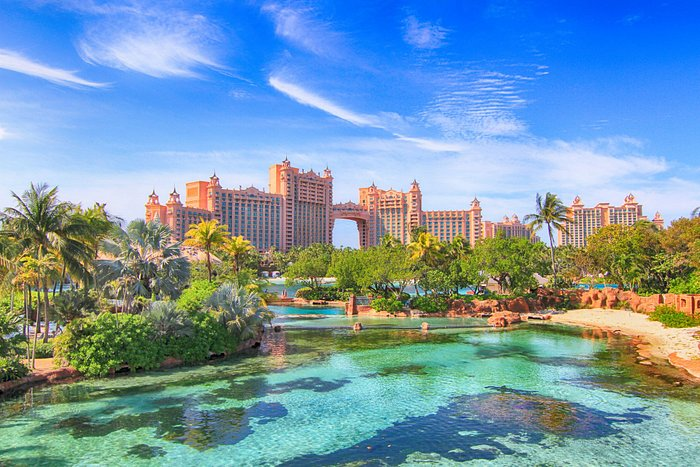
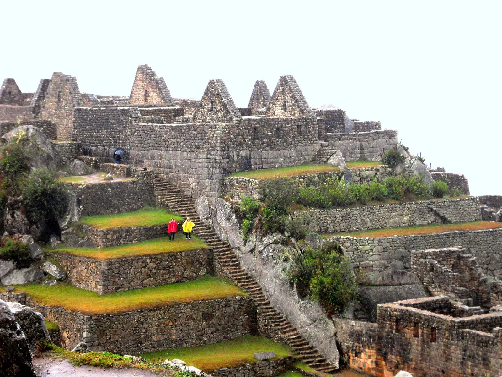
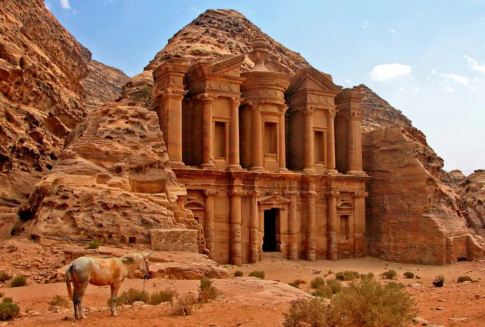
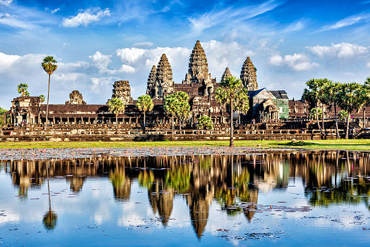
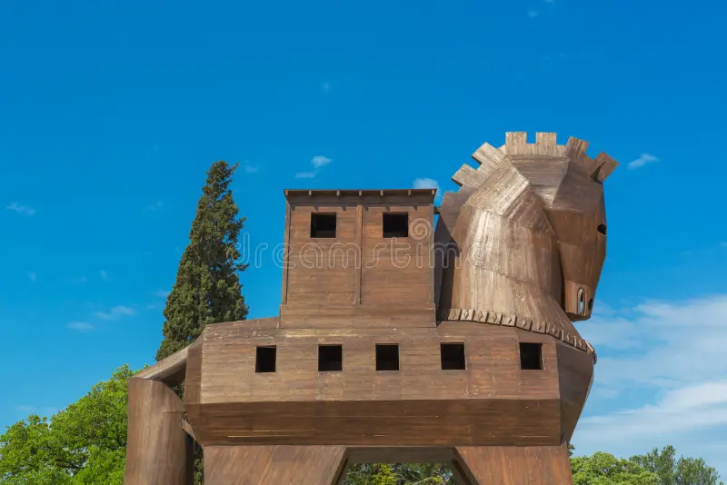
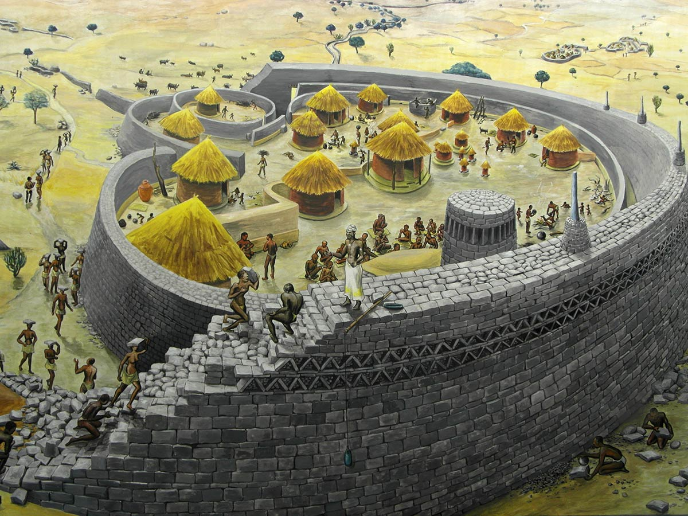
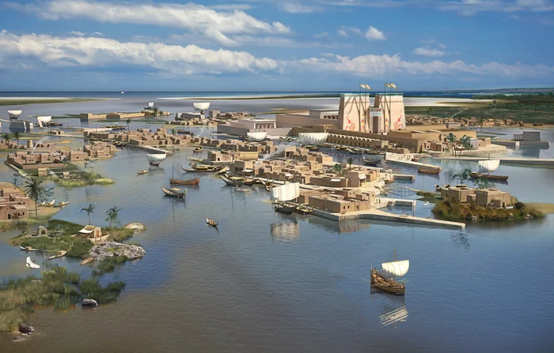
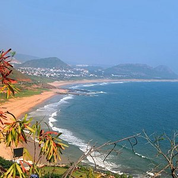
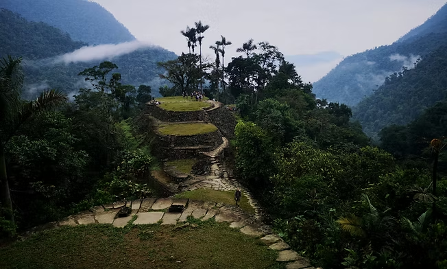

Atlantis
A legendary island mentioned by Plato, said to have sunk into the ocean in a single day and night of misfortune.

El Dorado
A mythical city of gold believed to exist in South America, inspiring countless expeditions and legends.

Pompeii
An ancient Roman city buried under volcanic ash after the eruption of Mount Vesuvius in 79 AD, preserved in time.

Machu Picchu
Once forgotten, this Incan citadel was rediscovered in 1911 and remains a symbol of Andean ingenuity and beauty.

Petra
An archaeological city in Jordan, carved into red sandstone cliffs, once a thriving trading hub of the Nabataeans.

Angkor
The vast temple complex of Angkor in Cambodia was once the center of the Khmer Empire, later swallowed by jungle.

Troy
The legendary city of Homer’s epics, once thought to be purely mythical, now linked to archaeological ruins in modern-day Turkey.

Great Zimbabwe
The ruins of a powerful kingdom in southern Africa, built between the 11th and 15th centuries, known for its massive stone walls.

Nan Madol
A city built on coral islets off the coast of Micronesia, featuring massive stone constructions and mysterious origins.

Thonis-Heracleion
An ancient Egyptian port city submerged under the Mediterranean, rediscovered in the early 2000s near modern Alexandria.

Vijayanagara
Once the capital of a powerful South Indian empire, now in ruins but known for its rich architecture and cultural significance.

Ciudad Perdida
Meaning "Lost City," this ancient settlement in Colombia predates Machu Picchu and was rediscovered in the 1970s.
